September 2025
Research
Mechanics, materials, and AI for engineering design.
Research Areas
01
Composite Materials & Structures
02
AI for Engineering Design & Optimization
03
Mechanical Metamaterials & Smart Structures
04
Semiconductor Engineering & Computational Science
Publications
Google Scholar ↗International Journals (18)
August 2025
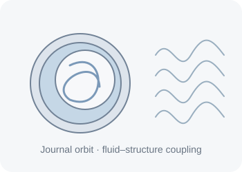
July 2025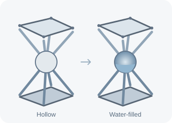
June 2025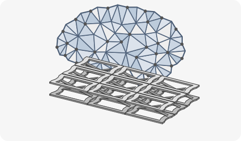
April 2025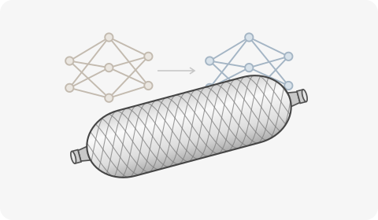
November 2024April 2024
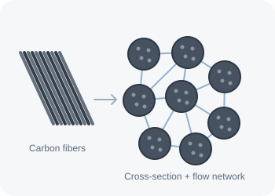
April 2024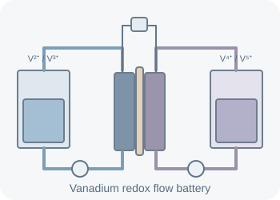
December 2023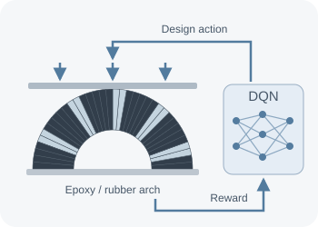
November 2023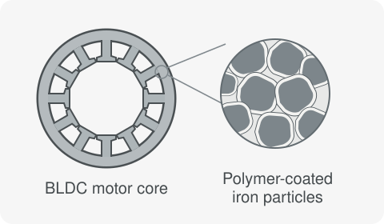
September 2023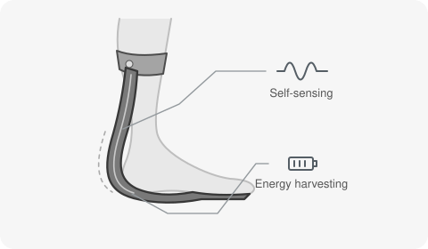
December 2022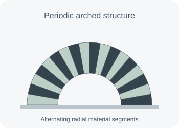
December 2022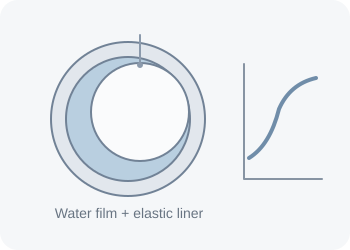
November 2022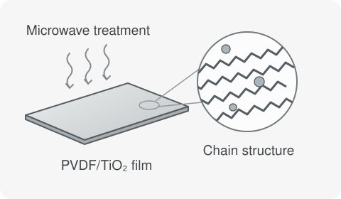
January 2022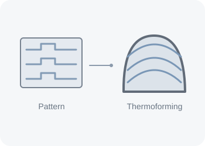
October 2021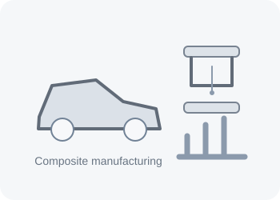
June 2021October 2020
Domestic Journals (6)
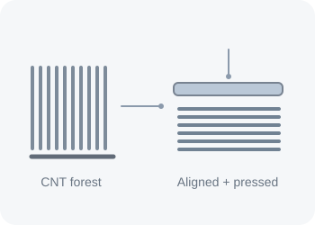
November 2024September 2024
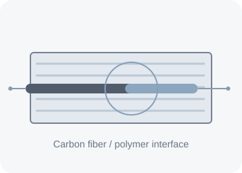
December 2023May 2023
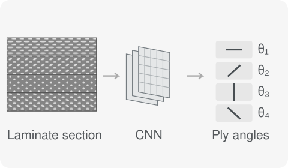
February 2023February 2020
Patents
Granted Patents (등록 특허) (6)
Anti-vibration structure and manufacturing method thereof ↗
고성능 복합재 불용성 전극 및 그 제조 방법 ↗
Composite material capable of measuring bending deformation, spring including the same, and manufacturing method thereof ↗
Closed-cell thermoelectric foam ↗
Composite material capable of measuring bending deformation, spring including the same, and manufacturing method thereof ↗
Triboelectricity-based energy harvesting material, spring including same, and method of manufacturing same ↗
Patent Applications (출원 특허) (4)
Bi-stable meta-structure and method for manufacturing the same
바나듐 레독스 흐름 전지용 전극, 바나듐 레독스 흐름 전지용 전극 조립체 및 바나듐 레독스 흐름 전지의 제조 방법 ↗
Porous electrodes for vanadium redox flow battery with gradient in compressive stiffness and manufacturing thereof ↗
Stack type filter modular air cleaner ↗
Projects
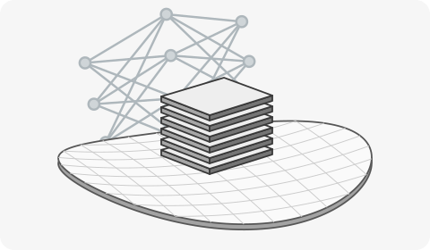
Samsung Electronics · September 2024–Present
HBM · DRAM Structural Mechanics & Advanced Simulation
I combine multiscale simulation and AI-assisted prediction to study warpage, stress, and bonding in HBM and DRAM.
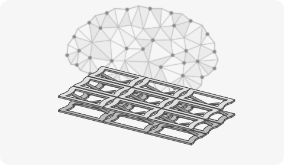
Mechanical metamaterials · Structural optimization
AI-Driven Mechanical Metamaterials
Using reinforcement learning to design structures that carry a load while isolating low-frequency vibrations.
Composite structures · Transfer learning
AI for Composite Pressure Vessels
Combining analytical models and finite element simulations through transfer learning to predict how composite pressure vessels deform under load.
Wearable robotics · Multifunctional composites
Advanced Smart Composites
Exploring how composite springs for exoskeletons can sense deformation and harvest energy from motion.
Composite laminates · Image analysis
Deep Learning for Composite Layup Design
Using convolutional neural networks to infer fiber orientations from images of composite laminates.
Polymer films · Molecular dynamics
Functional Polymer Nanocomposites
Studying how microwave processing changes the crystal structure of PVDF films through experiments and molecular dynamics simulations.
Magnetic materials · Electric motors
Soft Magnetic Composites for Electric Motors
Investigating how polymer coatings on iron particles affect the performance of soft magnetic cores in brushless DC motors.
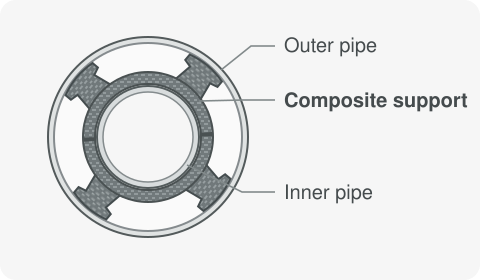
Marine structures · Composite design
Composite Supports for LNG Systems
Analyzing the strength and fatigue behavior of composite supports for double-wall pipes on LNG vessels.